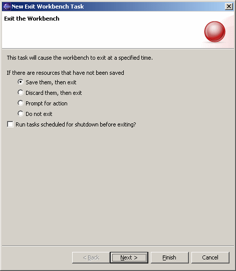

Schedule Exit Workbench To schedule an exit of the workbench (similar to choosing Exit on the File menu) to be run at a specified time, open the scheduler view, right click to access the popup menu, select the "New" submenu, and then select "Exit Workbench". In the event that there are resources that have not been saved, options are provided to save then and then exit, discard them and then exit, prompt the user for what to do, or to abort the exit operation. Another option is provided that controls whether other scheduled export tasks should be run when this task is executed. Click the "Next >" button to schedule when the exit is to occur. |